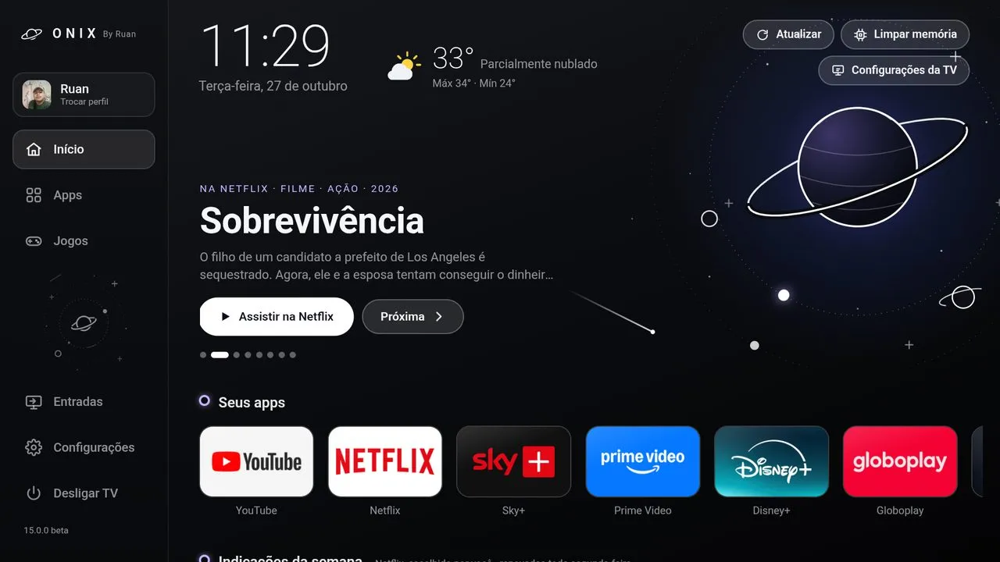
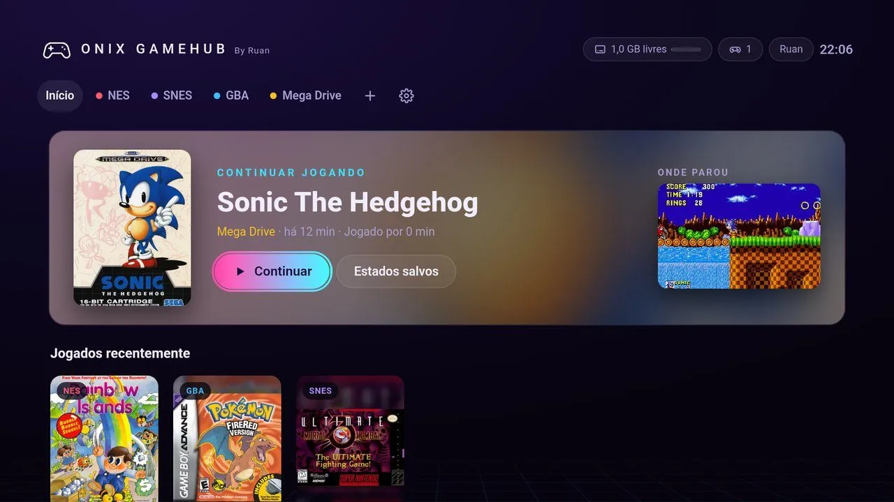
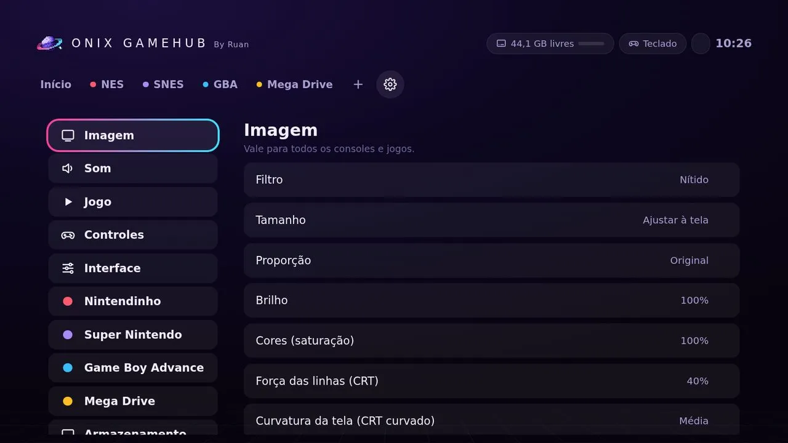
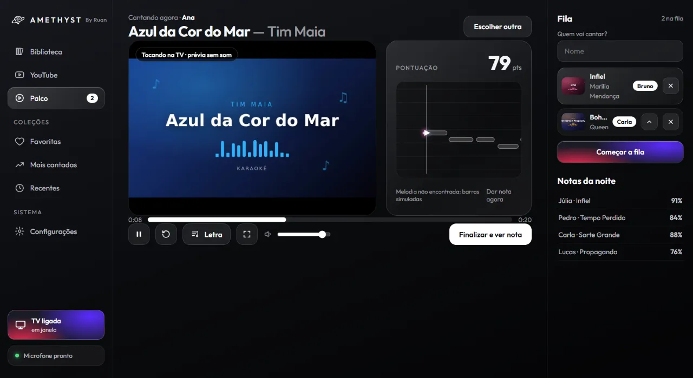
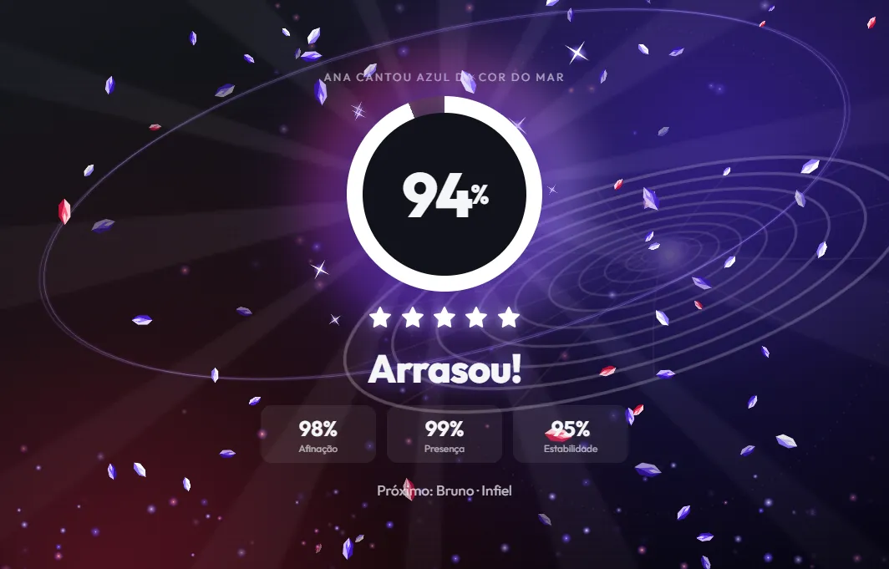

Project Gems
Os projetos do Ruan remetem a pedras preciosas, as gems: Onix, Cobalt, Amethyst e Opala. Cada um nasceu da vontade de ter algo mais bonito, mais rápido ou mais divertido, e todos são gratuitos.
 Launcher para TVs
Launcher para TVsOnix
A tela inicial da TV do jeito que o Ruan queria: visual de vidro escuro, rápida no controle remoto e com tudo num lugar só.
- Apps organizados do seu jeito e indicações da semana da Netflix, Disney+, HBO Max e Globoplay.
- Notícias dos games, jogos embutidos e o Cobalt GameHub na aba Jogos.
- Perfis com Modo Infantil, troca de entradas HDMI e uma tela de descanso espacial.
- Onix Controle: o celular Android vira o controle remoto da TV inteira.


Cobalt GameHub
Nintendinho, Super Nintendo, Game Boy Advance e Mega Drive num lugar só, com o visual do Onix e o ponto exato onde você parou.
- Continuar jogando com a imagem de onde parou, estados salvos, avançar e rebobinar.
- Filtros de TV antiga (CRT) e de portátil (LCD); no PC, CRT curvado e fundo ambiente.
- No iPhone e iPad: web app instalável sem loja, com controles na tela na vertical e horizontal.
- Controles de Xbox, PlayStation e 8BitDo, Controle 1 e 2 e botões do seu jeito.
- Nenhum jogo vem junto: use os seus.


Amethyst
Seus vídeos de karaokê numa biblioteca, nota pelo microfone e a TV mostrando tudo enquanto você controla pelo notebook.
- Biblioteca pelos seus vídeos, separada por artistas, gêneros e favoritas.
- Nota pelo microfone: afinação, presença e estabilidade, com comemoração para quem mandar bem.
- Tela da TV com quem vai cantar, a nota ao vivo e a fila.
- Videoclipes com letra e aba do YouTube para o que não estiver na biblioteca.


Opala
Um bot de WhatsApp que fica no ar 24 horas, com menu e textos no estilo do Ruan.
Por enquanto o Opala é privado: ainda está sendo lapidado. Quando estiver pronto para todo mundo, ele aparece aqui.